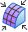

Fit surfaces command
Fitting specific geometric construction surfaces to colored geographic regions is part of the Reverse Engineering Workflow.
Fit surfaces command

Use the Fit surfaces command to assign a user-selected geometric construction surface to a selected region. The selected region is delimited by a single color. The selected color can be any contiguous color.
After selecting a contiguous color mesh region, it turns green. The geographical surface
type to be assigned to the selected mesh region is chosen using the Fit option. A tolerance value is applied using the Tolerance option. Select  to apply the selection. This causes the selection area to display the chosen construction
surface and populates the PathFinder with the selected surface type. If a different type of construction surface is desired,
erase the selected surface type from the PathFinder and start again.
to apply the selection. This causes the selection area to display the chosen construction
surface and populates the PathFinder with the selected surface type. If a different type of construction surface is desired,
erase the selected surface type from the PathFinder and start again.
The associated geometric surface for each extracted geographic region is listed in the Features collector of the PathFinder in the synchronous environment or simply as a surface in an ordered environment.
To return any one or all individual surfaces back to the original colored geographic region, delete them from the PathFinder. This allows another type of geometry to be Fit to the colored geographic region.
The Fit command bar has the following options:
- Fit
-
Lists all the construction surface types that can be assigned to a selected region.
- Tolerance
-
Specifies a tolerance value to apply to the operation. A lower tolerance values yields a surface type of greater accuracy. A construction surface cannot be applied if the tolerance is set to a higher precision than the mesh facets support.
- Options
-
After one or more construction surfaces have been extracted, this lists extracted surfaces that can be deleted. To delete an extracted surface, right-click on an extracted surface in the list and select Delete.
- Accept
-
Select this option to apply the selected construction surface to the selected region. You can also right-click or press Enter to accept the selections.
- Reset
-
If the selection is not wanted, select Reset to restore the original mesh.
Next steps
How do I
Create a sketch from a section curveLearn more
Reverse Engineering workflowReverse engineering example
Look up more details
Delete Mesh commandFill Holes command
Smooth Mesh command
Align command
Align command bar
Remesh command
Remesh Options dialog box
Automatic regions command
Manual regions command
Extract surfaces command
Deviation Analysis command
Deviation Analysis command bar
Deviation Analysis Settings dialog box
Section Sketches command
Section Sketches command bar
Section Sketches Options dialog box
Related Topics
Align a mesh body to a coordinate systemAnalyze the deviation between two objects